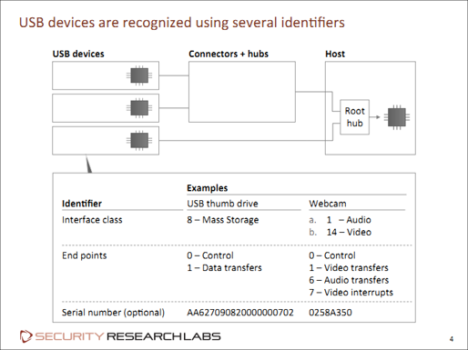

0x00 锲子
这篇博文缘起公司一位单片机dalao的月末技术分享，当时觉得是挺有意思的，顺带着自己目前的研究方向又是偏向硬件（无线）、协议这一块，又恰好之前公司接了一家公司的授权实地渗透，当时有想法是就是扔badusb（捂脸），这边仅记录下学习过程。
0x01 USB介绍
- USB(Universal Serial Bus)原意是指
通用串行总线，是一个外部总线标准，用于规范电脑与外部设备的连接和通讯，这套标准在1994年底由英特尔、康柏、IBM、Microsoft等多家公司联合提出，提出之后经过一个快速的发展成功替代串口和并口等标准，成为一个世界认可的统一标准，被当代的海量设备使用。 - HID(Human Interface Device)是一种计算机协议，约定了计算机在完成通讯过程时所要遵守规则，HID协议使得
设备之间无需安装驱动就能进行交互，基于HID协议的USB设备有USB键盘、鼠标等。
0x02 BadUsb介绍
起源：
- BadUSB最早是在2014年的BlackHat安全会议上由研究人员JakobLell和Karsten Nohl提出并展示的（PDF资料）。不同于其他的U盘病毒，它
利用HID协议无需安装驱动就能进行交互的功能，通过模拟键盘、鼠标、网卡等设备，最终拿下Shell或者窃取敏感信息等。
原理：
主机是通过设备固件中的某些描述符来判断USB哪种设备的。这就意味着我们可以利用此漏洞将一些特殊的USB设备伪装成为其他任何设备，例如输入设备、网卡等等。

当插入USB设备后，主机驱动会向设备请求各种描述符来识别设备，为了把一个设备识别成HID类别，设备固件在定义描述符的时候必须遵守HID规约。
构成：
- 普通U盘一般都是由闪存（FLASH）和主控（MCU）构成，主控主要负责控制数据读写任务分配，闪存的话一般有一部分用来存放u盘固件（无法直接读取），其它部分用来进行读写和存储。
- BadUsb就是利用对u盘固件进行重新编程，将虚拟键盘输入转为协议约定的字节指令集成进固件中，让主机将usb识别为一块键盘，并执行事先编写好的虚拟键盘输入。
0x03 BadUsb危害及利用方式
危害：
- 恶意代码存在于U盘的固件中，PC上的杀毒软件无法访问到U盘存放固件的区域，因此也就意味着杀毒软件和U盘格式化都无法防御BadUSB的攻击。
利用：
- BadUSB插入后，可以模拟键盘、鼠标等设备对电脑进行操作，例如通过这些操作打开电脑的命令终端，并执行恶意命令，从指定网址下载其他代码并于后台静默运行。这些代码功能包括：窃取信息、反弹shell、发送邮件等，从而实现控制目标机或者窃取信息的目的。
0x04 攻击代码&演示
贴下实物：
这边买的是某宝上制成U盘模样的Arduino Leonardo，50RMB左右就能入手一块了，恶意代码可以用Arduino进行烧录
贴下代码：
这边贴的是一个最简单的cmd远端下载恶意文件执行，因为只是为了解原理，所以没有加绕杀软uac的代码:
1 |
|
插入BadUsb：
贴下getShell图片：
贴下视频：
这边贴下玄武实验室的视频链接
0x05 漏洞根源及防御对策的可行性
漏洞原因：
- BadUsb漏洞的根源在于USB固件可以被重新编写，而由于主机对HID设备的过分信任，导致计算机无法识别当前设备是合法设备还是被改造过的设备。
防护思路&缺陷：
| 防护思路 | 缺陷 |
|---|---|
| USB设备白名单 | USB设备通常没有唯一的序列号 ；操作系统也没有对应的白名单机制 |
| 屏蔽危险的设备类别，或者完全屏蔽USB设备 | 影响可用性；通用设备易被滥用，如果屏蔽，则基本没有可用USB设备 |
| 扫描外围设备固件中的恶意代码 | 必须在固件本身的支持下（可能不支持），才能读取USB设备固件 |
| 对固件更新使用代码签名 | 在微型控制器上难以实现安全的认证系统；大量设备目前已经存在漏洞 |
| 禁止硬件的固件更新 | 简单有效（但主要局限于新设备） |